Im Kaufhaus gibt es viel zu entdecken. Findet die Dinge und sagt genau, wo sie sind. Danach gibt es eine Runde Tabu.
🔍 Suchbild📍 Wo? & Wohin?🔤 Tabu🗣️ Frei sprechen
Niveau wählen
Was gibt es alles zu sehen?
Schaut genau hin! Beschreibt reihum die Lage der Dinge so genau wie möglich.
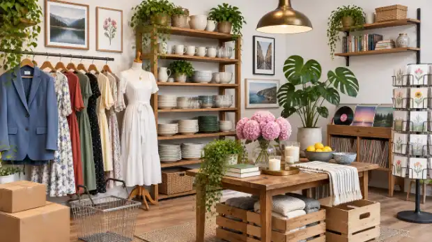
🔍 Such-Spiel: Eine Person nennt etwas aus der Liste — die anderen suchen es im Bild und beschreiben im ganzen Satz, wo es ist. Wer es zuerst richtig beschreibt, ist als Nächstes dran.
Findet diese Sachen
Tippt eine Karte an, wenn ihr das Ding im Bild gefunden und die Lage beschrieben habt.
🟦 der🟩 das🟥 die
📋 Die ganze Wortschatzliste
Alle Wörter zum Thema — für alle gleich. Das ist euer Wortvorrat für Tabu, Rate-Spiel und die Präpositionen.
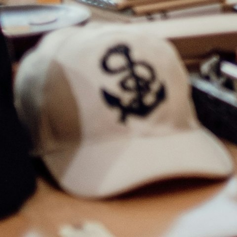
die Kappe
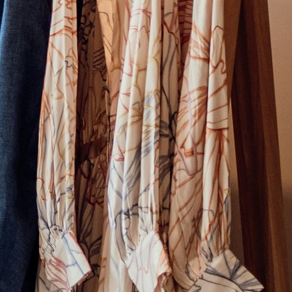
das Kleid
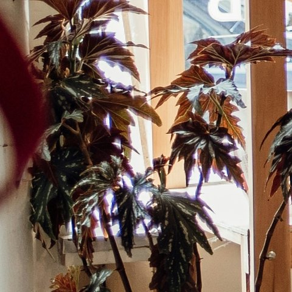
die Pflanze
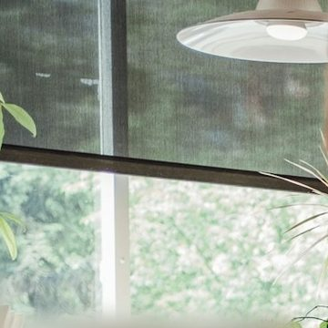
das Fenster
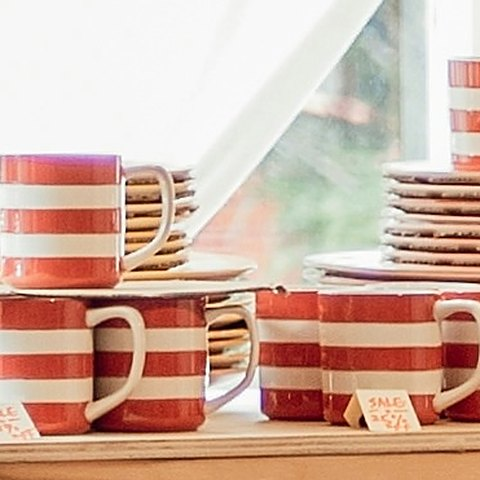
die Tasse
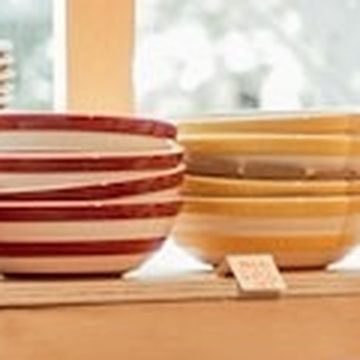
die Schüssel
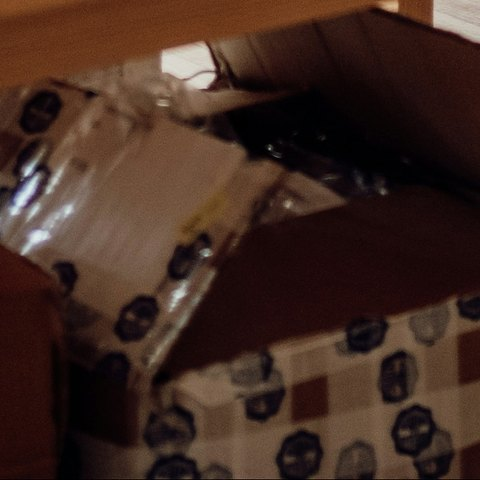
der Karton
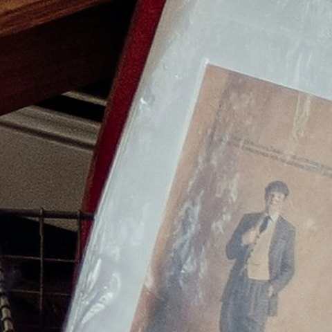
das Bild
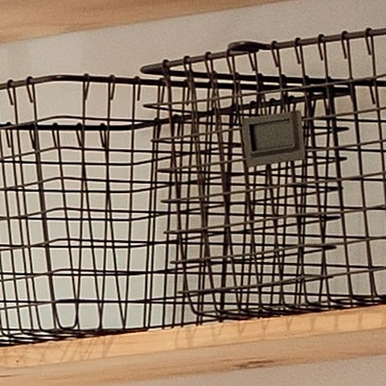
der Korb
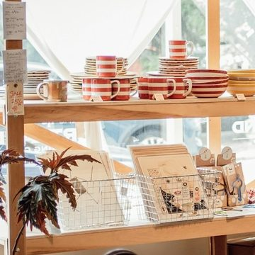
das Regal
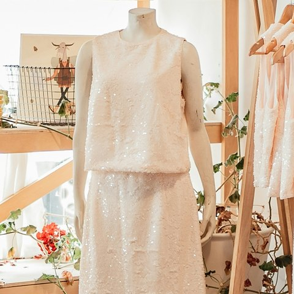
die Schaufensterpuppe
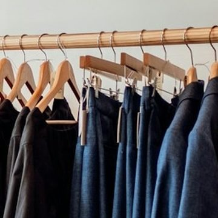
die Kleiderstange
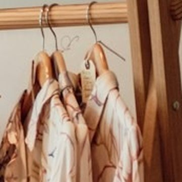
der Kleiderbügel
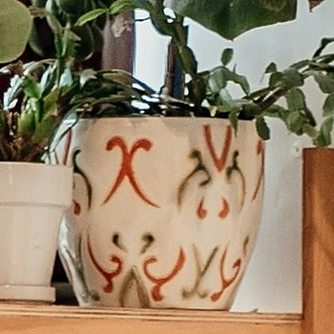
der Blumentopf
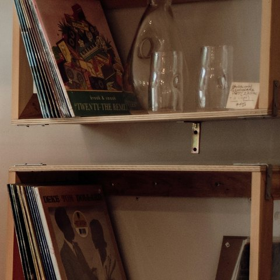
das Wandregal
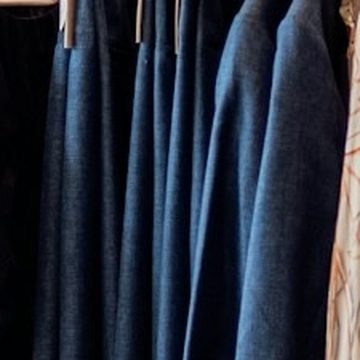
der Blazer
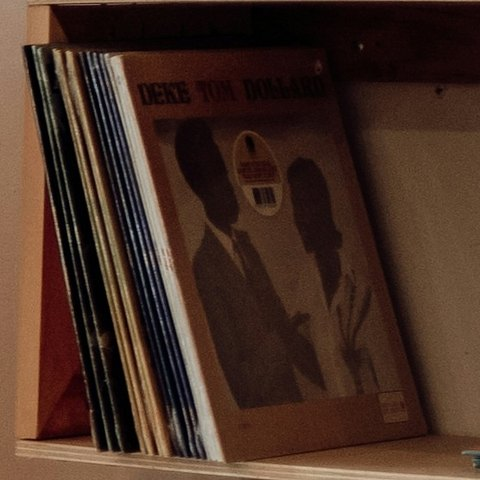
die Schallplatte
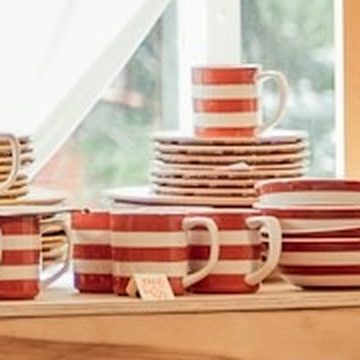
das Geschirr
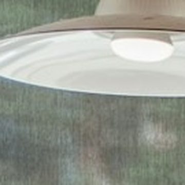
die Hängelampe
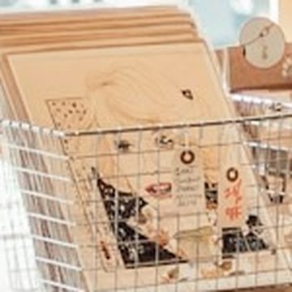
die Grußkarte
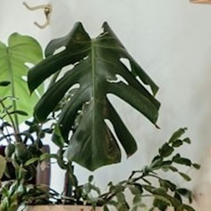
die Monstera
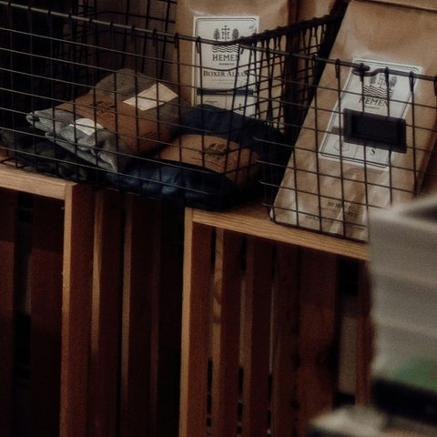
die Holzkiste
🎁 „Ich sehe etwas, das …"
Eine Person tippt auf „Neues Wort", sieht Bild + Wort und beschreibt nur mit Präpositionen, wo es ist — die anderen raten!
🤫 Dein geheimes Wort
Bereit?
Nur die beschreibende Person schaut · beschreibe die Lage, sag das Wort nicht!
🗣️ So beschreibst du: „Es befindet sich …" · „Es liegt / steht / hängt …" + Präposition + Dativ. Jeder Klick gibt ein neues, gemischtes Wort aus deinem gewählten Niveau (🟨 A2/B1 · 🟦 B1/B2 · 🟩 B2/C1).
📍 Präpositionen
Beschreibt die Lage der Dinge — die Übung passt sich eurem Niveau an.
Wo? → Dativ
Einfache Wo?-Fragen. Antwortet im ganzen Satz zum Bild.
auf
„Die Kappen liegen auf dem Tisch.“
in
„Im Regal stehen rote Tassen.“
neben
„Neben den Tassen stehen Schüsseln.“
vor
„Vor dem Fenster steht ein Regal.“
unter
„Unter dem Tisch steht ein Karton.“
an
„Am Fenster stehen viele Pflanzen.“
🧠 Dativ-Artikel: der → dem · das → dem · die → der.
Wo? → Dativ
Frage Wo? (Lage) → Wechselpräposition + Dativ. Bildet zu jeder einen Satz zum Bild.
an
„An der Kleiderstange hängen Kleider und Blazer.“
auf
„Auf dem Wandregal stehen Schallplatten.“
in
„In der Vitrine liegen kleine Geschenke.“
neben
„Neben der Schaufensterpuppe hängen die Kleider.“
über
„Über der Kleiderstange hängt ein Wandbrett mit Körben.“
hinter
„Hinter der Schaufensterpuppe ist das Fenster.“
vor
„Vor der Kleiderstange steht ein Tisch.“
zwischen
„Die Schaufensterpuppe steht zwischen dem Regal und der Kleiderstange.“
🧠 Dativ-Artikel: der → dem · das → dem · die → der · Plural → den (+n).
Wohin? → Akkusativ
Etwas bewegt sich — Frage Wohin? (Richtung) → Akkusativ.
an + Akk.
„Häng das Kleid an die Kleiderstange.“
auf + Akk.
„Leg die Kappe auf den Tisch.“
in + Akk.
„Stell die Tasse ins Regal.“
🧠 Akkusativ-Artikel: der → den · das → das · die → die · Plural → die. Merksatz: Wo? = Dativ · Wohin? = Akkusativ.
Präzise beschreiben
Beschreibt die genaue Lage mit anspruchsvollen Präpositionen — gern mehrere Angaben in einem Satz.
oberhalb + Gen.
„Oberhalb der Kleiderstange hängt ein Wandbrett mit Drahtkörben.“
innerhalb + Gen.
„Innerhalb der Vitrine liegen kleine Geschenke.“
inmitten + Gen.
„Inmitten der Pflanzen steht ein Blumentopf mit Muster.“
gegenüber + Dat.
„Gegenüber dem Regal hängen die Blazer.“
entlang + Gen.
„Entlang des Fensters stehen viele Pflanzen.“
mehrteilig
„Vorne in der Mitte, direkt unter dem Tisch mit den Kappen, steht ein offener Karton.“
🧠 Genitiv-Präpositionen: oberhalb / innerhalb / inmitten / entlang + Genitiv (des / der). gegenüber steht mit Dativ. Kombiniert sie für präzise Beschreibungen.
🔤 Tabu
Erkläre das Wort oben — aber ohne die verbotenen Wörter! Jeder Klick gibt ein neues, gemischtes Wort aus deinem gewählten Niveau (🟨 A2/B1 · 🟦 B1/B2 · 🟩 B2/C1).
Erkläre dieses Wort
Bereit?
🚫 Diese Wörter sind tabu
Tippe auf „Neue Karte"
⏱️ Spielidee: 60 Sekunden pro Runde. Für jedes erratene Wort einen Punkt. Verbotenes Wort benutzt → Karte futsch. Zwei Teams!
🗣️ Frei sprechen
Sprecht frei — nutzt den Wortschatz aus dem Bild. Die Fragen passen sich eurem Niveau an.
A2/B1
Bild
Was siehst du auf dem Bild? Nenne fünf Dinge.
Kleidung
Was trägst du heute? Nenne drei Kleidungsstücke.
Farben
Welche Farben haben die Sachen im Bild?
Alltag
Was kaufst du gern? Warum?
B1/B2
Kleidung
Was trägst du heute? Beschreibe dein Outfit.
Einkaufen
Kaufst du gern Kleidung? Lieber online oder im Laden?
Stil
Was ist dein Kleidungsstil — bequem, schick, sportlich?
Diskussion
Markenkleidung — ist der höhere Preis es wert?
Frage-Runde
Stell deinem Partner 3 Fragen zum Thema Shopping.
Geschichte
Erfinde eine Geschichte: Beim Einkaufen passiert etwas Peinliches.
B2/C1
Diskussion
Ist Markenkleidung ihren hohen Preis wert? Begründe deine Meinung.
Konsum
Kaufen wir heute zu viel Kleidung? Was wäre eine sinnvolle Alternative?
Zukunft
Wie sieht das Einkaufen in zwanzig Jahren aus? Was verschwindet, was bleibt?
Monolog
Beschreibe zwei Minuten lang das Bild so genau, dass dein Partner es zeichnen könnte.
🔑 Redemittel: „Ganz vorne / hinten sieht man …", „Direkt daneben …", „Links / rechts von … befindet sich …", „Im Vordergrund / im Hintergrund …"
🏆 Das große Quiz
Mehrere Runden rund ums Kaufhaus: Wortschatz, Artikel, Wo? & Wohin? und Einkaufs-Alltag. Pro Frage gibt es genau eine richtige Antwort — das Quiz passt sich eurem Niveau an.
Runde 1 · Frage 10 von 6
🏅 Als Wettkampf: Zwei Teams, abwechselnd. Wer die richtige Antwort hat, muss zusätzlich einen eigenen Satz mit dem Wort bilden — erst dann gibt es den Punkt.